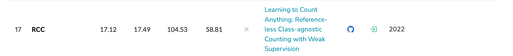

溶err
rank17 RCC
dearRongerr's github
便签
应付面试
捉个虫
笔记
文献
杂
溶err
dearRongerr's github
便签
便签
备忘录
TODO
DONE
mkdocs学习
应付面试
应付面试
力扣
力扣
1
2
深度学习
深度学习
pytorch的维度变换公式
关于Transformer
关于Transformer
位置编码
Transformer
手撕多头自注意力机制
手撕自注意机制
机器学习
机器学习
手撕kmeans
捉个虫
捉个虫
github
笔记
笔记
ViT 学习笔记
SwinTransformer 学习笔记
文献
文献
人群计数
目标计数
目标计数
rank1 CountGD
rank2 GeCo
rank3 DAVE
rank4 CACViT
rank5 SSD
rank6 LOCA
rank7 SemAug CountTR
rank8 CounTR
rank9 SemAug SAFECount
rank10 SPDCN
rank11 GCA SUN
rank12 SAFECount
rank13 BMNet
rank14 LaoNet
rank15 CounTX
rank16 Counting DETR
rank17 RCC
rank18 Omnicount
rank19 FamNet
复现论文
复现论文
杂
杂
乐观 & 坚强
rank17 RCC

Back to top